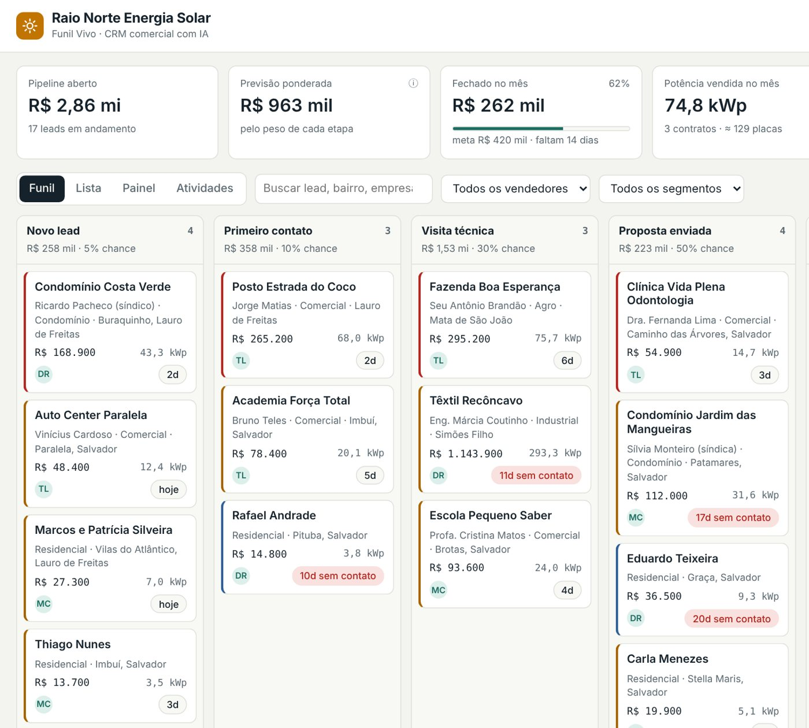
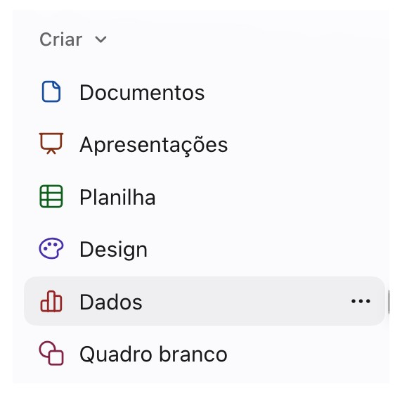

🎯 O que tu vai ter no final
Um sistema feito do teu jeito — por exemplo, um controle de clientes e vendas — que abre num link, guarda tudo que tu cadastra e não some quando tu fecha a página. Dentro dele, a IA ajuda no dia a dia: avisa quem está esquecido há dias e escreve a mensagem pro cliente. E tu ainda pode perguntar ao Claude sobre os teus números, em português.

Antes de tudo — o que tu precisa
Pouca coisa, e nenhum conhecimento técnico.
- Uma conta do Claude num plano pago (Pro, Max, Team ou Enterprise). Sendo honesto: no plano grátis o Claude até cria a tela, mas ela não guarda os dados — e um sistema que esquece tudo não serve. Veja aqui a regra oficial e o preço atual em claude.com/pricing.
- Um computador com o navegador ou o app do Claude. Dá pra usar no celular depois, mas criar é mais confortável numa tela grande.
- Um processo que hoje te dá dor de cabeça: aquela planilha que ninguém atualiza ou o grupo de WhatsApp onde tudo se perde.
- Zero programação. Tu descreve o que quer; o Claude escreve o sistema.
Existem várias formas de organizar isso
Este caminho não é o único, nem o melhor pra tudo. Vê qual combina com a tua situação:
Planilha (Excel ou Google Sheets)
Prós
- De graça e todo mundo sabe usar
- Começa em minutos
Contras
- Não avisa nada nem pensa por ti
- Bagunça fácil com várias pessoas mexendo
Sistema pronto do mercado
Prós
- Robusto, com suporte
- Costuma se ligar ao WhatsApp e a outros sistemas
Contras
- Mensalidade por usuário
- Tu adapta a tua empresa a ele, não o contrário
Criar com o Claude
este manualPrós
- Feito exatamente do teu jeito
- Pronto em cerca de uma hora
- Inteligência artificial dentro
Contras
- Precisa de plano pago do Claude
- Não se liga sozinho ao WhatsApp nem à nota fiscal
- Só quem tem conta no Claude acessa
Sistema sob medida, feito comigo
o completoPrós
- Faz tudo que o Claude não faz: cliente acessando, WhatsApp, nota fiscal, teu login e teu endereço
- Aguenta escala e tem segurança de verdade
- Pensado pra tua operação, com acompanhamento
Contras
- Investimento maior
- Leva mais que uma hora pra ficar pronto
Os termos, rapidinho
O caminho, em uma olhada
Tu descreve
o que precisa, em português
O Claude cria
o sistema, com dados de teste
Tu ajusta
pedindo mudanças, uma por vez
Tu usa
e pergunta sobre os números
Escolha UM processo pra começar
Pega o que mais dói hoje. Não tenta organizar a empresa inteira de uma vez. Antes de abrir o Claude, responde estas quatro perguntas num papel:
- Quem vai usar? Só tu? Tu e dois vendedores?
- O que precisa ficar guardado? Nome do cliente, telefone, valor, etapa…
- O que tu quer ver de relance? Quanto falta pra meta, quem está atrasado…
- O que a IA poderia fazer por ti? Avisar, resumir, escrever mensagem…
Começa pequeno. Um sistema simples que o time usa vale mais que um completo que ninguém abre. Dá pra aumentar depois.
No Claude, escolha "Dados" e cole o pedido
Entra em claude.ai (ou no app). No menu Criar, do lado esquerdo, escolhe Dados. É a opção nova que monta um app de verdade, com banco de dados — é ela que faz o cadastro ficar guardado. Depois cola o modelo abaixo, trocando o que está entre [colchetes] pelas tuas respostas do passo 1.

Esses tipos de criação (Dados, Design, Planilha…) são novos e o Claude vai liberando aos poucos. Se ainda não apareceu pra ti, começa uma conversa normal e pede o sistema assim mesmo com o modelo abaixo; ele cria o artefato do mesmo jeito.
Sou [quem você é] na [nome da empresa], que [o que a empresa faz].
Crie pra mim um sistema de [nome do sistema] com banco de dados, que guarde as informações de forma permanente.
Quem vai usar: [quem usa e o que cada um faz].
O que precisa guardar: [as informações de cada cadastro].
O que eu quero ver de relance: [indicadores, alertas, listas].
A inteligência artificial deve: [o que ela faz por você].
Coloque [número] registros fictícios do meu tipo de negócio pra eu testar, e me mostre o sistema antes de eu usar com a equipe.Sou dono da Casa Viva Planejados, que faz móveis planejados em Salvador.
Crie pra mim um sistema de controle de clientes e vendas com banco de dados, que guarde as informações de forma permanente.
Quem vai usar: eu e dois vendedores; cada vendedor cuida dos próprios clientes e eu vejo tudo.
O que precisa guardar: nome, WhatsApp, bairro, ambiente (cozinha, quarto, closet), valor do orçamento, etapa (contato, medição, orçamento, negociação, fechado, perdido) e data do próximo retorno.
O que eu quero ver de relance: quanto vendemos no mês contra a meta de R$ 150 mil, e quem está sem contato há mais de 7 dias.
A inteligência artificial deve: olhar cada cliente, dizer a chance de fechar e escrever a mensagem de WhatsApp pro próximo contato.
Coloque 15 clientes fictícios pra eu testar, e me mostre o sistema antes de eu usar com a equipe.Ótimo sinal. Responde normal, como responderia a um funcionário novo. Quanto mais ele entende o teu negócio, melhor fica o sistema.
Abra o sistema e faça o teste do "fechar e abrir"
Quando terminar, o Claude te mostra o sistema pronto, com um link próprio. Abre e faz três coisas:
- Cadastra um cliente inventado.
- Fecha a página e abre o link de novo.
- Confere se o cliente continua lá.
Se continuou, o banco de dados está funcionando. Se sumiu, volta na conversa e escreve: o sistema não guardou o cadastro, corrija pra salvar no banco de dados.
Na primeira vez que tu usar a IA dentro do sistema, o Claude pergunta se pode. É normal: cada uso da IA conta na tua cota do plano.
Ajuste por partes, uma mudança de cada vez
Não gostou de algo? É só pedir na mesma conversa, em português. Uma mudança por vez fica mais fácil de conferir e de desfazer. Alguns pedidos que funcionam bem:
Adicione o campo "como conheceu a loja" no cadastro do cliente.
Deixe tudo fácil de usar no celular, sem precisar arrastar nada.
Crie uma aba com uma tabela de todos os clientes, que eu possa editar.
Coloque um botão que baixa a lista de clientes em planilha.
Só eu posso mudar a meta do mês; os vendedores só veem.Quando o Claude publica uma versão nova do sistema, o que já estava cadastrado continua lá.
Pergunte ao Claude sobre os teus números
Essa é a parte que mais surpreende. Na conversa em que tu criou o sistema, o Claude consegue ler o que está cadastrado e responder:
Quais clientes estão sem contato há mais de 7 dias, e o que eu faço com cada um?
Vamos bater a meta do mês? Qual o caminho mais curto?
Por que estamos perdendo vendas? Que padrão você vê?A IA é boa, mas erra. Antes de tomar uma decisão importante pela resposta, dá uma olhada nos números no próprio sistema.
Leve pro time, com cuidado
Pra equipe usar junto, compartilha o sistema com as pessoas pelo botão de compartilhar do próprio Claude. Antes, três cuidados:
- Comece com dados fictícios. Só coloca cliente de verdade quando o sistema estiver do teu jeito.
- Não use link público com dado de cliente. Quem tiver o link consegue ver o que está cadastrado. Compartilha só com quem trabalha contigo.
- Faça cópia de segurança. Não existe backup automático. Baixa a lista em planilha toda semana.
Sim. Cada pessoa que for usar precisa de uma conta no Claude. Pra uma equipe inteira editando junto, o plano Team (de empresas) é o caminho mais tranquilo. Confere as opções do teu plano antes de decidir.
Onde isso não serve (e tudo bem)
Prefiro te contar agora do que tu descobrir depois. Este caminho não resolve:
- Sistema que o teu cliente acessa, como um portal de agendamento ou área do cliente.
- Integração automática com WhatsApp, emissão de nota fiscal ou o sistema de gestão da empresa.
- Endereço e login próprios, tipo sistema.suaempresa.com.br.
- Volume muito grande: ele vai bem com centenas ou poucos milhares de cadastros, não com centenas de milhares.
Quando chegar nesse ponto, o caminho é um sistema sob medida. E não se perde nada: tudo que tu montou aqui vira o rascunho perfeito dele, porque tu já sabe exatamente o que precisa.
🚀 O jeito completo é comigo
Esse caminho com o Claude é o atalho prático: rápido, barato e ótimo pra testar a ideia. O que eu construo pra empresa é outro nível, com tudo de melhor: teu endereço e teu login, teu cliente acessando de fora, integração com WhatsApp e nota fiscal, feito pra escalar, com segurança de verdade e acompanhamento de perto. Tu começa no Claude pra sentir o gosto. Quando quiser o de verdade, instalado na tua operação, é comigo.
Foi com esse mesmo método que eu criei, em menos de uma hora, um sistema de vendas completo pra uma empresa de energia solar fictícia: funil, metas, análise de cada cliente pela IA e registro de ligação por voz. É o aperitivo. O prato principal, feito sob medida pra tua empresa, vai muito além disso.
Gostou? Imagina do jeito completo.
Esse foi o atalho. Quando quiser um sistema de verdade instalado na tua empresa, com tudo de melhor, é comigo. Me chama.